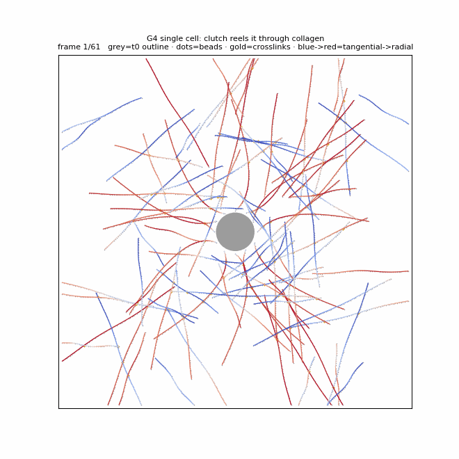
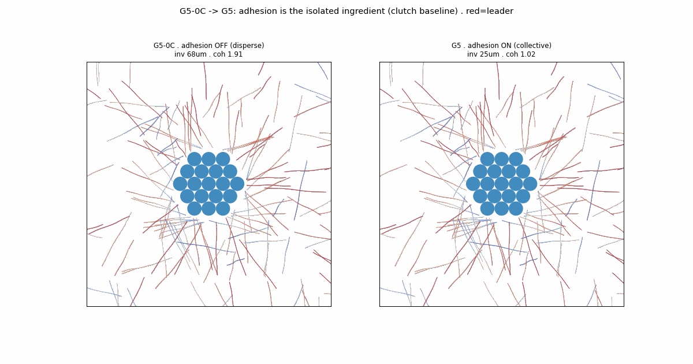

How a tumor learns to invade — one cell at a time.
Building a multicellular motor–clutch organoid on a bead–spring collagen network — step by careful step, from the validated single cell (G4) to collective vs single-cell invasion (G5).
Modelling
Minnie Tsai
Bead-based coupling
Prof. Hongbo Zhao
ECM mechanics / clutch
Prof. Kolade Adebowale
Wet-lab · PDAC/OSCC
Gloria Liu
Why move beyond one cell?
Tumors invade as multicellular organoids
Our G4 model captured one motor-clutch cell pulling collagen. But a real tumor is a ~200 µm organoid, and the biology we care about is inherently multicellular:
Collective strands vs single-cell escape — a cohesion decision between cells.
Radial collagen alignment (aster / TACS-3) built by many cells together.
So: what does adding cells actually change — and can we prove it cleanly?
Freeze everything G4 validated, then add multicellularity one ingredient at a time — scale → number → motility → adhesion. Each control answers one question before the next is added, so every G5 effect is attributable.
Cells move but don't stick → disperse. The single-cell baseline.
→
G5
+ adhesion
★
the one isolated ingredient
Cohesion on top of 0C → collective invasion. Δ(0C→G5) = the adhesion effect.
LOGIC Freeze everything G4 decided; add multicellularity one ingredient at a time — scale → number → motility → adhesion — so each effect is isolated before the next.
STEP 1 · G4 the validated single cell — the ECM
Collagen = beads, springs, crosslinks
Fibers are bead chains; crosslinks weld crossings, so pulling one fiber drags its neighbors. Every bead is overdamped — velocity ∝ net force:
G4 single cell contracting its collagen — a crosslink drags the fiber it's welded to. Red=radial, blue=tangential fibers, gold=crosslinks.
SOURCES Lee 2014 PLoS ONE · Saraswathibhatla 2025 SI Table 2 (k_s=4×10⁻³ N/m, κ_b=8.27×10⁻²⁰ N·m, ℓ₀=1 µm, k_xl=2×10⁻³ N/m)
STEP 1 · G4 the validated single cell — the clutch
The molecular clutch, with slippage
At 12 grip sites, a motor pulls actin and clutches transmit the pull to a fiber; high force → faster unbinding (Bell) → the bond slips and traction resets. A Gaussian kernel spreads each point-force onto nearby beads.
Biphasic traction–stiffness follows for free. The kernel is a projection tool, not an elastic spring.

G4 single cell: grip sites load, slip, and reel the cell through collagen. Emergent traction ≈ 56 nN.
SOURCES Chan & Odde 2008 Science · Bell 1978 · Bangasser 2017 (biphasic) · Zhao/Zhang 2025 (coupling) · Params: Adebowale 2021 Nat Mater SI T4
STEP 1 · G4 everything below is frozen from here
Parameter provenance
Symbol
Value
Meaning
Source
k_s
4×10⁻³ N/m
fiber stretch
Saraswath. SI T2
κ_b
8.27×10⁻²⁰ N·m
bending
Saraswath. SI T2
E
3 MPa
fiber modulus (softened)
advisor request
k_xl
10 nN/µm
crosslink
Saraswath. SI T2
k_c
2 nN/µm
clutch stiffness
Adebowale 2021 T4
k_on / k_off⁰
0.055 / 0.018 s⁻¹
clutch kinetics
Adebowale 2021 T4
F_b
1.5 nN
Bell force
Bell 1978 / Adeb.
v₀
24 nm/s
actin speed
Adebowale 2021
The discipline that makes the story clean
Every value cites a specific paper + table. These are frozen at G4 — the whole point of the next two steps is to change only cell number, nothing else.
⚠ own-sim numbers = personal testing, not validated findings until matched to a literature target
SOURCES Saraswathibhatla 2025 SI Table 2 · Adebowale 2021 Nat Mater SI Table 4 · Bell 1978 · log: parameter_provenance.md
STEP 2 · G5-0A scale-transfer control
Does the bigger box change the single cell?
One G4 cell, all-G4 params, dropped into the 440 µm organoid domain at matched fiber density. Same result?
G4
G5-0A
ratio
total traction
55.9 nN
16.1 nN
0.29
sectors gripping
12/12
3/12
—
per-sector
4.66
5.37
1.15
verdict ✓ The per-clutch physics transfers cleanly (within 15 %). The lower total is purely geometric — a lone cell in a uniform network finds fiber in only 3 of 12 sectors (G4 forced all 12). Enlarging the box doesn't change the physics.
Single cell, G4-frozen, big box — the near field still reorganizes like G4.
personal testing · 1 cell · G4-frozen params · matched density · seed 23
STEP 3 · G5-0B cell-number-only control
Do more cells pull harder together?
Fix the cells, keep G4 params, raise cell number M. Does per-clutch traction grow — a collective amplification?
M cells
sectors gripping
per-sector traction
1
12 / 12
4.50 nN
7
30 / 84
4.46 nN
13
19 / 156
4.51 nN
19
26 / 228
4.40 nN
verdict ✗ Per-clutch traction is flat (4.4–4.5 nN, M-independent). Clutches act independently — no collective amplification. So whatever makes invasion collective must come from cell–cell adhesion, not shared traction. That is exactly the next ingredient.
Fixed cells on the corona network, varying M — the invasive front grips, but traction per grip site is unchanged.
STEP 4 · G5-0C motility control — adhesion still OFF
Release the cells, but don't let them stick

Left: G5-0C — cells released, adhesion OFF → disperse. Right: G5 — same, adhesion ON → cohesive front. Only k_adh differs.
If we add motility but no cohesion, what happens?
They disperse — cells invade independently (68 µm), no front. This is the pure single-cell baseline.
Turning adhesion back ON (→ G5) gives a cohesive collective front at the same traction. So Δ(0C → G5) = the adhesion effect — isolated, at last, as the final ingredient.
0C · adhesion off
68
µm · disperses
G5 · adhesion on
25
µm · cohesive
personal testing · molecular clutch baseline · seed 23, 7200 s
STEP 4 · G5 the one new physics
Cell–cell adhesion: the collective ↔ single switch
0B told us the missing ingredient. Now each cell moves under the reaction of its own traction plus forces from neighbors — the governing equation of the organoid:
2 · Invade (released organoid) — all identical cells, held by adhesion, move together as one cohesive front — no leaders, no chaos.
personal testing · molecular clutch (Bell slip) · seed 23, 7200 s
G5 RESULT now vary the base case — adhesion sets the mode
Collective ↔ single-cell — tuned by adhesion alone
Molecular-clutch baseline (traction emergent); only cell–cell adhesion changes. Red = low-adhesion (EMT) cell, gold = crosslinks.
Mode
k_adh
Inv.
Cohesion
Cohesive
60
22 µm
1.00
Collective
8
25 µm
1.02
Single-cell
1 + leaders
78 µm
1.62
With the real clutch, the organoid always invades — adhesion decides cohesive vs scattered. Genuine "stuck" needs weak traction: turning the clutch off drops invasion to 4.7 µm (ablation, next).
personal testing · molecular clutch baseline · seed 23, 7200 s
G5 RESULT which knob matters? — one change per panel
Ablation — attribute, don't just observe
8 panels, 2 h each; baseline = molecular clutch (adh 8); one mechanism changed per panel. Red = leader.
Change
Inv.
Coh
BASELINE (clutch)
25 µm
1.02
− clutch (const pull)
4.7 µm
1.11
− adhesion (=0C)
68 µm
1.91
− crosslinks
7.7 µm
1.02
+ strain-stiffening
24 µm
1.01
+ plasticity
25 µm
1.02
+ leaders (EMT)
60 µm
1.14
high adhesion
22 µm
1.00
Three real levers:clutch drives invasion (25→4.7), adhesion is the cohesion switch (68 µm & scatters when off), crosslinks transmit the pull (25→7.7). Stiffening / plasticity ≈ no effect; leaders → single-cell escape.
personal testing · molecular clutch baseline · seed 23, 7200 s · output/ablation/
What it means biologically · honest gaps
Mapping to biology — and what's missing
Biology
In the model
Tractionforce on ECM
clutch F_c → beads; reaction reels the cell
Adhesion / EMT↓E-cadherin
k_adh cohesion; lowering it = unjamming
Protrusiongrips
12 angular grip sites (coarse proxy)
MMP proteolysisnot yet
fibers pulled/pushed, not cut
On deck
Validate alignment rise 0.5→0.75 vs Saraswathibhatla / Kolade data.
Substrate stiffness — current baseline feels too soft; needs calibration to a measured gel modulus.